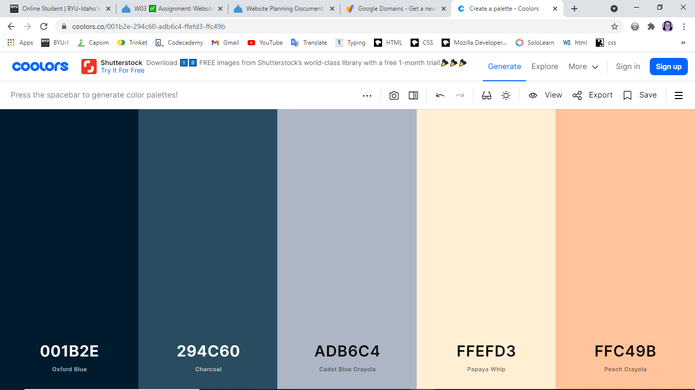

The Color Scheme for Sunshine and Rainbows
I chose a color scheme that made me think of weather. The blues really make me think of the sky, rain, and other weather changes. This pallet has both dark and lighter options to give me more room to design without running into unreadable combinations.
